SimCLR v1 & v2 리뷰
원문 : Chen, Ting, et al. “A simple framework for contrastive learning of visual representations.” International conference on machine learning. PMLR, 2020. & Chen, Ting, et al. “Big self-supervised models are strong semi-supervised learners.” arXiv preprint arXiv:2006.10029 (2020).
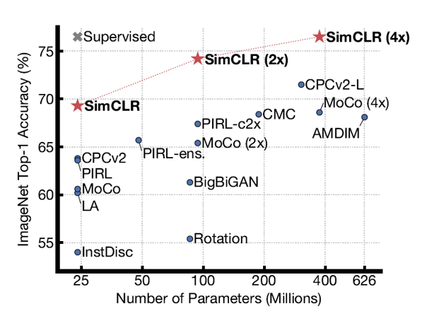
오늘 소개드릴 논문은 Google Research에서 2020년 각각 ICML과 NIPS에 발표한 A simple framework for contrastive learning of visual representations (SimCLR) 논문과 Big self-supervised models are strong semi-supervised learners (SimCLR v2) 대한 리뷰입니다.
후자의 논문은 전자에서 제안한 SimCLR 기반 모델의 성능을 개선한 후속 연구를 담고 있습니다. 따라서 이 글의 순서는 SimCLR의 개념을 소개하는 전자의 논문을 먼저 리뷰하고, SimCLR의 성능을 고도화한 후자의 논문을 이어서 리뷰하겠습니다.
SimCLR v1
첫 번째 논문은 이미지 데이터의 정답 label이 없는 상황에서 효과적으로 visual representation 을 추출하는 SimCLR이라는 이름의 unsupervised learning algorithm을 소개하고 있습니다. SimCLR은 data augmentation을 통해 얻은 positive/negative sample들에 대해 contrastive learning을 적용시켰으며, 성능 측면에서 supervised learning으로 학습한 모델들에 준하는 모습을 보여주었습니다. 그럼 SimCLR을 지금부터 파헤쳐보겠습니다!
Contrastive Learning Framework
Unsupervised learning이란 데이터의 label 없이 네트워크 모델을 학습하는 것을 의미합니다. 이전에 Computer vision 분야에서는 이미지를 임의로 회전시킨 후 모델이 회전 방향을 맞추게끔 학습시키거나, 이미지를 잘라 zigsaw 퍼즐을 만든 후 모델이 퍼즐을 풀 수 있게끔 모델을 학습했습니다. 이렇게 모델을 학습하기 위해 정의한 새로운 형태의 문제를 pretext task 라고 부릅니다. Pretext task를 통해 학습하는 방식은 어느 정도의 성능을 보여주긴 했지만, 해당 pretext task를 잘 풀 게끔 학습되었을 뿐 이미지의 일반적인 시각적 특징을 잡아내지는 못하는 모습을 보여주었습니다.
이를 해결하기 위해 최근에는 contrastive learning 기반의 방식들이 많이 연구되고 있습니다. Contrastive learning이란 positive pair끼리는 같게, negative pair끼리는 다르게 구분하면서 모델을 학습하는 방식입니다. 예를 들면 노랑이라는 키워드(query)가 주어지고 사과/바나나/딸기라는 보기(key)가 있을 때, 노랑-바나나를 연결하고 사과/딸기와는 연결되지 않게 학습하는 방법입니다. 위 방식은 이전에 발표된 여러 연구들(CPC, CMC 등)에서 뛰어난 성능을 보여주었습니다.
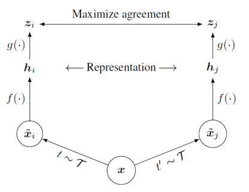
SimCLR은 각 이미지에 서로 다른 두 data augmentation들을 적용하여, 같은 이미지로부터 나온 결과들은 positive pair로 정의하고 서로 다른 image로부터 나온 결과들은 negative pair로 정의하는 형태로 contrastive learning 방식을 적용하였습니다. 위의 그림에서 보면, 하나의 이미지(x)가 서로 다른 두 개의 augmentation 변환을 거쳐 두 개의 이미지(xi, xj)로 나눠집니다. 이렇게 변환된 두 이미지는 같은 이미지로부터 얻었기 때문에 positive pair로 정의합니다. 만약 또다른 이미지인 y로부터 yi, yj의 변환된 이미지가 나왔다고 한다면 xi과 yi(또는 yj)는 서로 다른 이미지로부터 얻었기 때문에 negative pair로 정의합니다.
변환된 각 이미지들(xi, xj)은 CNN기반의 네트워크(f)를 통과하여 visual representation embedding vector(hi, hj)로 변환됩니다. 이러한 representation vector를 생성하는 network를 base encoder라고 부르며 논문에서는 ResNet을 base encoder로 이용하였습니다. Visual representation vector는 MLP 기반의 네트워크(g)를 통과하여 변환되고, 변환된 output(zi, zj)를 이용하여 contrastive loss를 계산합니다. MLP 기반의 네트워크는 projection head라고 부르며, 두 개의 linear layer 사이에 ReLU activation function을 넣은 구조로 구성되어 있습니다.
Encoder 및 projection head는 batch 단위로 학습하게 되는데, 만약 N의 batch size를 이용하게 된다면 각각 data augmentation을 거쳐서 2N개의 sample을 얻을 수 있습니다. 이렇게 되면 각 sample 별로 1쌍의 positive pair와 2N-2쌍의 negative pair를 구성할 수 있게 됩니다. 논문에서는 positive pair 간의 similarity는 높이고, negative pair 간의 similarity는 최소화하는 형태의 loss function을 제안하여 학습에 활용하였습니다. 해당 loss function은 NT-Xent라는 이름으로 불리며, 아래와 같은 방식으로 계산됩니다.
일반적으로 contrastive learning 방식으로 학습을 진행할 때, 1.좋은 퀄리티를 가지며 2.충분히 많은 양의 negative pair가 필요하다고 알려져 있습니다. 학습은 batch 단위로 진행되기 때문에, 많은 양의 negative pair를 구성하기 위해서는 큰 batch size를 이용해서 학습해야 합니다. 이를 위해 SimCLR은 기본적으로 4096의 batch size(총 8192개의 sample)를 이용하여 학습했으며 빠른 학습을 위해 128 코어의 google cloud TPU를 사용했다고 합니다. 또한 SGD나 Momentum optimizer가 아닌, 큰 크기의 batch size로 학습할 때 적절하다고 알려진 LARS optimizer를 이용하여 multi-device(분산학습)으로 학습하였습니다. Batch normalization을 적용할 떄는, device 별로 평균과 표준 편차를 계산하여 적용하는 것이 아니라, 모든 device에서의 평균/표준편차 값들을 통합해서 적용하였습니다. 이렇게 하면 positive sample이 포함된 device와 negative sample만으로 구성된 device들 간의 분포를 같게 normalize하게 되어 batch normalization 과정에서 발생하는 정보 손실을 최소화할 수 있습니다.
논문에서는 위에서 제안한 contrastive learning 기반의 framework로 다양한 실험을 진행했습니다. 기본적인 unsupervised learning 과정은 모두 ImageNet ILSVRC-2012 데이터셋으로 진행하였고, 학습한 encoder를 고정(freeze)시키고 그 위에 linear classifier를 얹어서 정확도를 측정하는 linear evaluation 방식으로 모델을 평가하였습니다. 그 외에 encoder를 고정시키지 않고 학습 가능하게 만들어서 평가하는 fine-tuning 방식이나, 다른 dataset을 이용해서 모델 변수를 조정하는 transfer learning 방식으로 SimCLR encoder를 평가하였습니다.
지금까지 대략적으로 SimCLR에 대해 소개했습니다. 지금부터는 SimCLR에서 어떤 data augmentation 방법을 사용했는지, 왜 projection head를 제외한 encoder만 실제로 이용하는지 등에 대해 조금 더 자세히 알아보겠습니다.
Data Augmentation for Contrastive Representation Learning
SimCLR에서는 우리가 supervised learning에서 일반적으로 사용하던 data augmentation 방법들을 이용하여 positive pair와 negative pair를 생성하였습니다. Data augmentation을 이용하기 전에는 두 종류의 sample을 만들기 위해 서로 다른 모델 구조를 가진 네트워크를 이용했다고 하는데요. 예를 들면 receptive field가 다른 두 CNN을 이용하여 하나는 local한 정보 위주로 추출하고, 다른 하나는 global한 정보 위주로 추출하여 contrastive loss를 적용하는 식이었다고 합니다. 하지만 이는 data augmentation으로 random crop을 하는 것과 같은 효과를 보이는데요, data augmentation 기반의 방법으로 훨씬 더 간단하게 sample을 추출할 수 있는 것입니다.
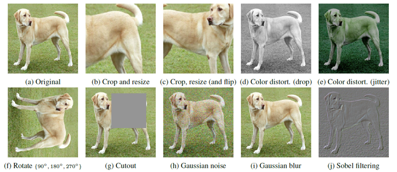
그렇다면 어떤 data augmentation 방법들을 이용해야 최적의 visual representation을 학습할 수 있을까요? SimCLR에서는 위의 그림에서 보이듯 cropping이나 resizing, rotating, cutout 등 이미지의 공간적/기하학적 구조를 변형하는 data augmentation 방법과 color dropping, jittering, Gaussian blurring, Sobel filtering 등 이미지의 색상을 왜곡하는 data augmentation 방법들을 제시하였습니다. 사실 ImageNet 데이터셋의 이미지들은 서로 다른 크기를 가지고 있기 떄문에 학습 전에 항상 crop/resize 과정을 거쳐서 변환해주었다고 하는데요. SimCLR에서는 crop/resize 과정을 기본으로 하고, 한쪽 augmentation branch에서는 테스트해보고자 하는 다른 augmentation 방법들을 추가해주고 다른 한쪽 branch는 그대로 둔 채 학습을 진행하여 성능을 비교했습니다. 이러한 비대칭적인 구성은 다른 branch에도 augmentation 과정을 추가했을 때보다 성능이 낮을 수 있는데요, 그럼에도 불구하고 공정한 비교를 위해 이러한 방식을 선택했다고 합니다.
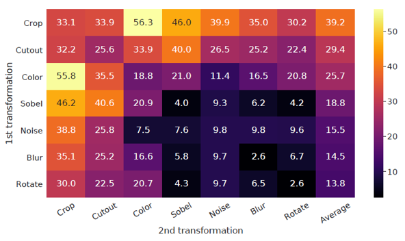
총 7가지의 data augmentation 방법을 하나 또는 두개 이어붙여서 성능을 측정하였는데요, 결과적으로 하나의 augmentation 만으로는 좋은 성능을 달성하기 어려웠고, 여러 augmentation을 더해주었을 때 predictive task의 난이도가 높아지면서 representation quality가 증가했다고 합니다. 두 가지 augmentation을 이어 붙인 경우에는 위의 그림에서 알 수 있듯 random crop과 random color distortion을 이어붙인 경우에 가장 좋은 성능을 보여주었습니다.
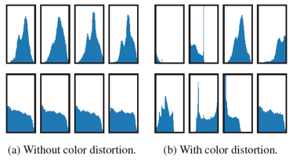
특히 논문에서는 Color distortion이 꼭 필요한 이유에 대해서도 나름의 분석을 보여주었는데요. Color distortion 없이 random crop만 진행한 경우에는 augmentation branch를 통해서 얻은 sample들이 위의 historgram에서 보이듯 서로 같은 color distribution을 공유하고 있었고, 결국 네트워크가 시각적인 특징을 찾아내는 것이 아닌 색 배합만을 찾아내어 낮은 representation quality를 보여주었습니다.
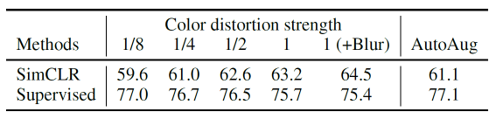
또한 data augmentation의 세기를 바꾸어가며 모델의 성능을 측정해보기도 하였는데요, 위의 표를 보시면 color distortion을 강하게 가할수록 contrastive prediction task의 난이도가 증가하여 visual representation을 더 잘 추출하게끔 학습하였습니다. 심지어는 supervised learning에 도움이 되지 않는 강도의 augmentation도 SimCLR에서는 성능 향상에 기여하는 것을 볼 수 있습니다.
Model Architecture of SimCLR
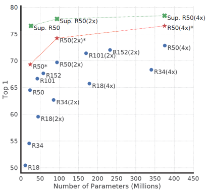
위의 그림은 SimCLR과 supervised learning의 학습 방법을 다양한 크기의 모델에 적용시키며 linear evaluation 성능을 통해 비교한 것입니다. Supervised learning과 마찬가지로 SimCLR도 모델의 크기가 커질수록 학습 성능이 증가하는 경향을 보여주었습니다.
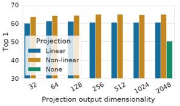
또한 non-linear projection head를 통해서 contrastive loss를 계산하는 구조 역시 linear projection head나 projection head를 아예 이용하지 않을 때보다 항상 좋은 성능을 낸다는 것을 보여주었습니다. 이 때 projection head의 output dimension은 성능에 크게 영향을 주지 않는 것이 확인되었습니다.
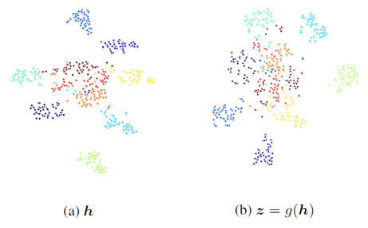
Projection head는 학습 성능을 높여주었지만, projection head를 통해서 얻은 output vector는 base encoder의 output보다 시각적인 특징을 잘 표현하지 못하였습니다. 위의 그림은 10개의 클래스에 대한 base encoder와 projection head의 output vector를 t-SNE 방법으로 군집화한 것인데요. Base encoder로부터 나온 vector들이 클래스 별로 훨씬 더 잘 구분되는 것을 확인할 수 있습니다. 논문에서는 contrastive learning을 통해서 학습한 정보들이 projection head를 지나면서 소실되기 때문이라고 이를 설명하는데요. 이를 보여주기 위해서 contrastive prediction task를 두 벡터들이 얼마나 잘 맞추는지에 대한 실험을 합니다.
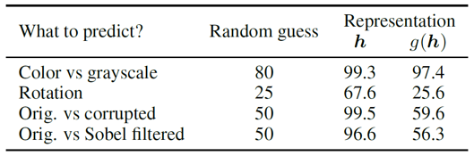
위의 결과를 보시면 projection head의 output vector는 base encoder의 output보다 rotation이나 gaussian noise, sobel filtering 등의 정보를 많이 담고 있지 않은 것을 볼 수 있습니다. 일반적인 downstream task가 이러한 시각적인 정보들을 기반으로 해결할 수 있는 task들이라고 한다면, base encoder에서 나온 vector를 visual representation으로 활용하는 것이 논리적으로 맞는 선택인 것 같습니다.
Loss Function and Batch Size
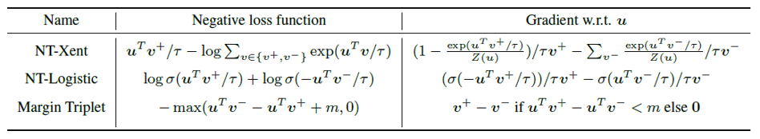
SimCLR에서는 cross-entropy 기반의 NT-Xent loss function을 이용하여 contrastive learning을 진행합니다. 논문에서는 NT-Xent loss와 기존 Contrastive learning에서 많이 사용되는 NT-Logistic, Margin triplet loss를 비교하면서 loss function 선정의 정당성을 보여주었습니다.
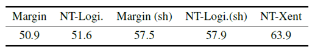
NT-Xent loss는 cross entropy loss를 기반으로 하기 때문에 negative sample들이 기준 sample과 얼마나 다른지에 대한 크기를 반영하고 있고, 결과적으로 좋은 성능을 보여준다고 합니다.
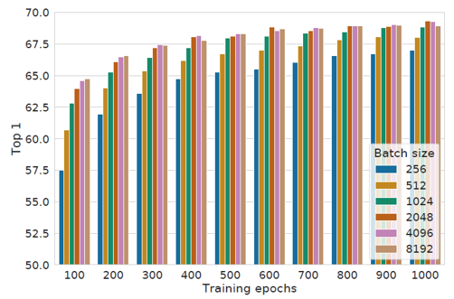
Contrastive learning은 안정적인 학습을 위해 충분한 양의 negative sample이 필수적입니다. Negative sample의 개수는 batch size와 비례하기 때문에, SimCLR을 학습할 때 batch size를 키울수록 모델의 성능이 증가하는 경향을 보여주었습니다. 또한 학습 과정에 random augmentation이 포함되어 있기 때문에 학습 시간이 길어질수록 충분한 양의 negative sample을 볼 수 있고, 성능에 대한 유의미한 경향성을 찾을 수 있었습니다.
Comparison with SOTA
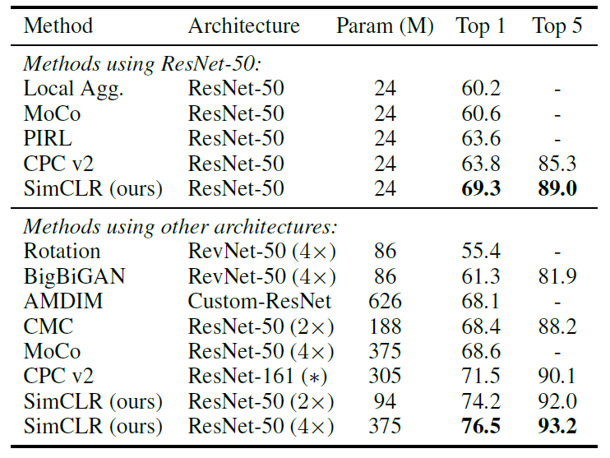
SimCLR은 1. 학습된 모델을 고정(freeze)하고 위에 linear classifier를 얹어서 성능을 평가하는 linear evaluation, 2.학습된 모델과 linear classifier를 모두 learnable한 상태로 학습하는 fine-tuning, 3.학습된 모델을 다른 종류의 dataset에 대하여 learnable한 상태로 학습하는 transfer learning 의 세 가지 방법으로 평가하였습니다.
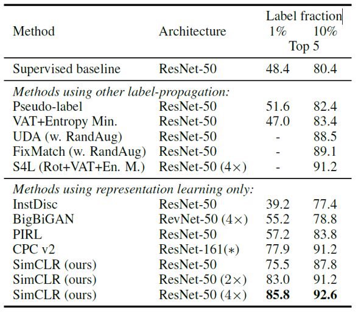
우선 기존의 self-supervised 방법들과 비교했을 때 SOTA의 성능을 보여주었습니다. 위의 두 그림은 Linear evaluation과 적은 dataset에 대한 fine-tuning 평가의 결과입니다. 두 방법들 모두 좋은 성능을 보여주었고, fine-tuning의 경우에는 같은 모델의 supervised learning 학습 결과보다도 좋은 성능을 보여주었습니다. (단, SimCLR의 경우 이미 pre-training된 모델을 fine-tuning 한 것이고 supervised learning의 경우 scratch부터 학습했기 때문에 학습량 차원에서는 공정한 비교가 아닙니다.)
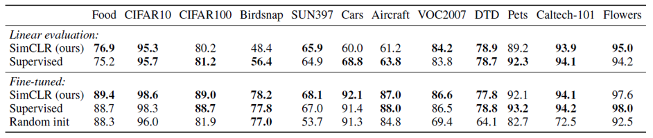
또한 다양한 데이터셋에 대해 transfer learning으로 학습했을 때, supervised learning에 준하거나 그 이상의 결과를 보여주었습니다.
SimCLR v2
앞서 설명한 SimCLR은 각종 평가 지표에서 SOTA의 성능을 보여주었습니다. SimCLR v2에서는 다양한 실험을 통해 기존 SimCLR의 성능을 개선하는 한편, few-labeled 데이터셋을 활용하여 SimCLR을 fine-tuning하고, 작거나 같은 크기의 모델로의 distillation 과정을 통해 모델의 효율성을 극대화하여 semi-supervised learning에서도 SOTA의 성능을 달성했습니다. 이는 NLP 분야에서 좋은 성능을 발휘한 BERT의 학습 패러다임과 나날이 발전하고 있는 student-teacher 기반의 semi-supervised learning 기법을 통합한 형태로, computer vision 분야에서는 어떤 형태로 연구되었는지 설명드리겠습니다.
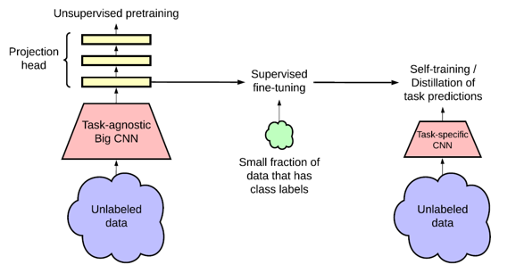
전반적인 framework의 구조는 위와 같습니다. SimCLR 기반의 unsupervised learning 방법으로 visual representation을 학습한 후에, 적은 labeled 데이터를 이용하여 이를 fine-tuning합니다. 이 때 unsupervised learning 과정은 최종 task와는 전혀 무관한 contrastive prediction task를 이용하여 학습을 진행했기 때문에 본문에서는 task-agnostic이라는 단어를 이용하여 표현하였습니다. 이후 fine-tuning된 모델은 unlabeled 데이터와 labeled 데이터를 모두 이용한 distillation 과정을 통해 성능 및 효율성 차원에서 고도화됩니다.
Self-supervised Pretraining with SimCLR v2
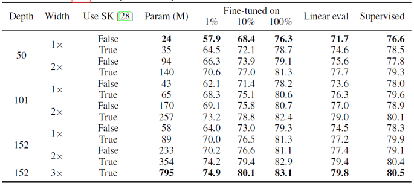
SimCLR v2는 세 가지 측면에서 개선되었습니다. 우선 기존에 ResNet-50을 4배 키운 모델을 이용했었는데, SimCLR v2에서는 ResNet-152를 3배 키우고 selective kernel을 더해 channel별로 attention을 가해주었습니다. 이는 기존과 비교했을 때 2배 정도 많은 parameter를 이용하지만, 1% labeled sample로 fine-tuning 했을 때 29%의 놀라운 top-1 accuracy 성능 향상을 보여주었습니다.
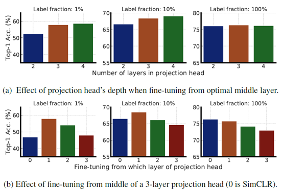
또한 SimCLR v2는 projection head를 구성하는 linear layer 개수를 2개에서 3개로 늘렸고, 학습 후에 모든 projection head를 버리는 것이 아니라 첫 번째 linear layer까지 encoder에 포함하였습니다. 이는 결국 기존 base encoder의 구조에 linear layer 하나를 추가한 것과 같은 구조인데, 앞선 실험과 마찬가지로 1% sample로 fine-tuning을 했을 때 14%의 top-1 accuracy 성능 향상을 보여주었습니다. 위의 그림은 projection head의 layer를 늘렸을 때와 projection head를 fine-tuning 과정에 포함했을 때 결과를 나타내고 있는데요. Projection head가 많을 수록 few-labeled 데이터에서 좋은 성능을 보이고, 그 중 첫번째 head를 fine-tuning에 포함할 때 성능이 가장 크게 향상되는 것을 확인할 수 있습니다.
마지막으로 SimCLR v2는 MoCo에서 영감을 받아 negative example을 최대한 늘리기 위한 memory network를 추가하였습니다. 하지만 이는 1% 정도의 적은 성능 향상을 보여주었는데, 논문에서는 기존 SimCLR이 4096개 이상의 batch size로 충분히 많은 negative sample을 제공하기 때문이라고 설명하고 있습니다.
Distillation via Unlabeled Samples
SimCLR v2는 projection head의 일부를 포함한 fine-tuning을 거친 후에, distillation 과정을 통해 성능 향상을 달성하였습니다. Student-Teacher 기반의 distillation 방법은 사전 학습된 teacher network(fine-tuning된 SimCLR v2)를 이용해 unlabeled 데이터에 대한 hidden layer output vector를 생성하고, 이를 기반으로 distillation loss를 활용하여 student network를 학습시키는 방법입니다.
만약 Student network의 크기가 teacher network의 크기보다 작은 경우에는, teacher network와 유사한 성능을 더 작은 모델로 달성할 수 있기 때문에 모델의 효율성 측면에서 개선의 여지가 있으며, teacher network와 같은 student network를 쓰는 경우에는 self-distillation을 통한 성능 개선이 가능합니다. 또한 적은 양의 labeled 데이터가 있는 경우에 이를 활용하여 distillation의 성능 향상폭을 극대화할 수 있습니다.
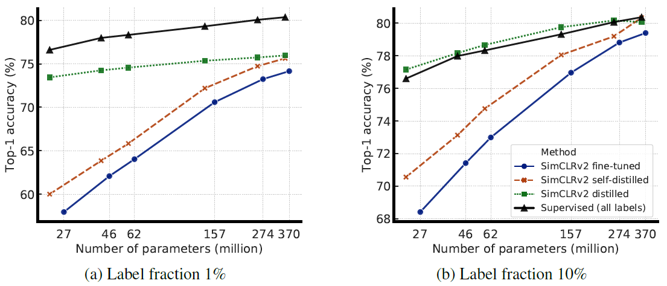
위의 그림은 1% 또는 10% 데이터로 fine-tuning한 모델과, 이후에 distillation 과정까지 진행한 모델, 그리고 모든 데이터로 supervised-learning을 진행한 모델의 성능을 비교하였습니다. 적은 labeled data의 경우에 distillation 과정을 통해 성능 향상이 발생하며, supervised learning에 거의 준하는 성능을 보이는 것을 확인할 수 있습니다.
Discussion and Result
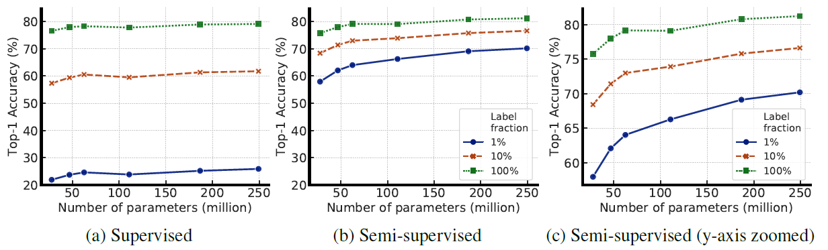
논문에서는 SimCLR의 성능을 개선하고 semi-supervised learning 분야에서 이를 활용하기 위해 수많은 실험을 진행하였습니다. 이 실험들은 공통적으로 모델의 크기를 키우면 contrastive learning이나 fine-tuning 결과가 개선된다는 것을 보여줍니다. 사실 모델의 크기를 키우면, 모든 데이터의 특징을 외울 수 있기 때문에 generalization이 떨어지고 성능 저하가 발생하기 쉬워보입니다. 논문에서도 모델을 키울수록 성능이 향상되는 실험 결과들에 대한 해석을 찾지 못했으며, 추후에 연구되길 바란다고 이야기하고 있습니다.
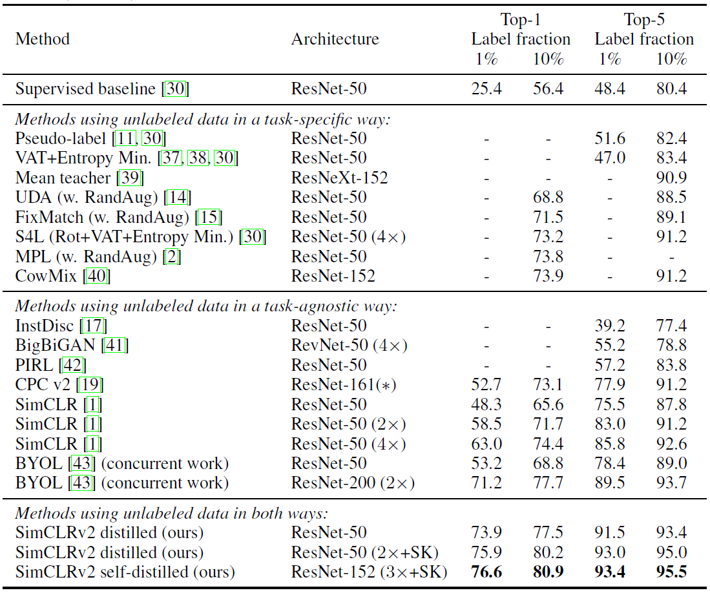
이렇게 distillation 과정을 거친 SimCLR v2 모델은 이전의 모든 self-supervised learning과 semi-supervised learning 기법들을 능가하는 SOTA의 성능을 보이고 있습니다.
Summary
SimCLR은 contrastive learning 기반의 학습을 통해 supervised learning에 준하는 성능의 unsupervised learning 학습 결과를 보여주었습니다. 물론 학습을 안정성을 위해 아주 큰 batch size를 이용해야 하고, 일반적인 연구실의 GPU 환경에서는 논문에서 사용한 4096개 정도의 batch size를 감당할 수 없기에, 구글이기에 할 수 있었던 연구였구나 하는 생각도 듭니다.
이어서 나온 SimCLR v2는 pre-training and fine-tuning이라는 패러다임에 맞게 학습을 진행했고, distillation을 통해 성능을 고도화했습니다. 다양한 실험을 통해 self- 그리고 semi-supervised learning에 대한 통찰을 하는 논문이라고 생각합니다.
분명한 것은 NLP에서 BERT 및 GPT3 등이 큰 성공을 거두고 있는 지금, 구글의 SimCLR은 computer vision에서의 unsupervised learning 연구에 큰 기여를 했고, 앞으로 어떤 모델이 나올지 기대해보며 이번 리뷰글을 마치겠습니다. 읽어주셔서 감사합니다 :)
참고 문헌 및 출처